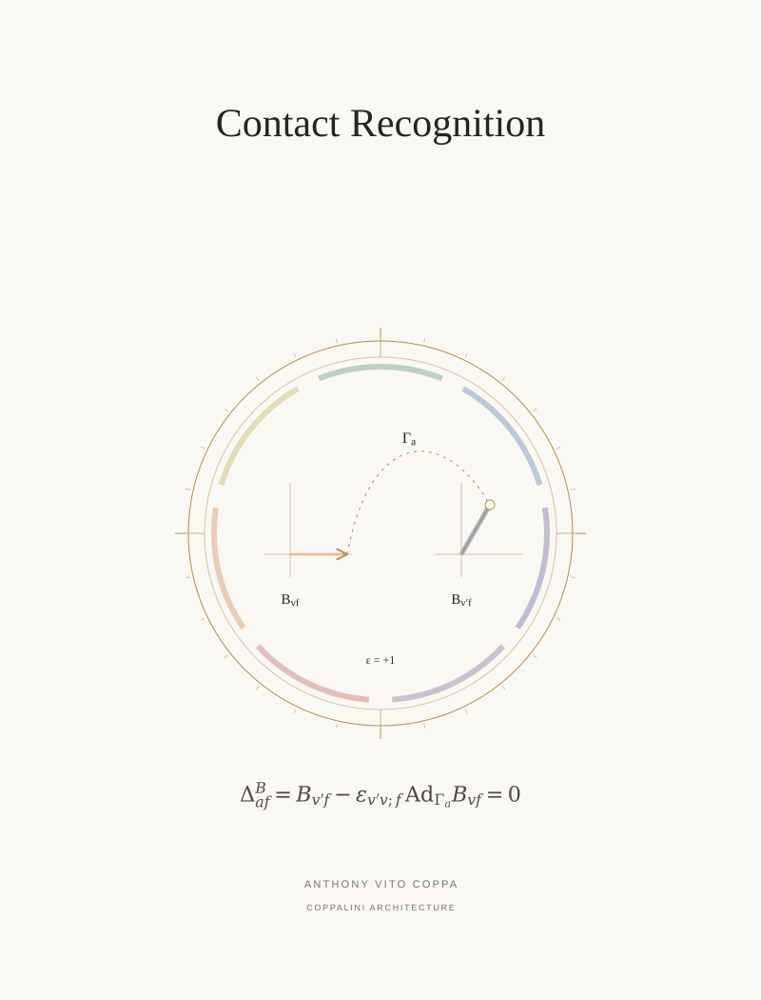

P 01 / Principal paper / COVER ARTWORK
Contact Recognition: A Typed Architecture for Compatible Curved Geometry


A spatial rotation transports a bivector into agreement with the second local description.
P 01 / Principal paper / COVER ARTWORK

A spatial rotation transports a bivector into agreement with the second local description.